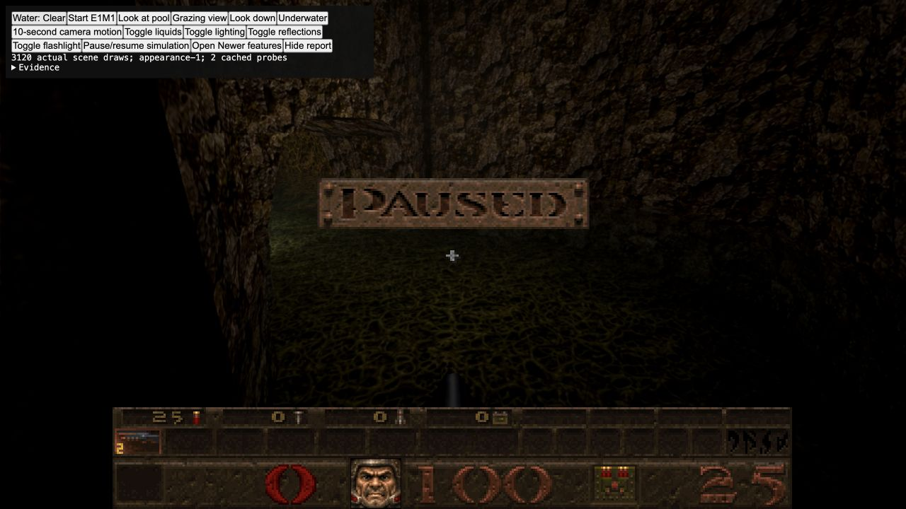
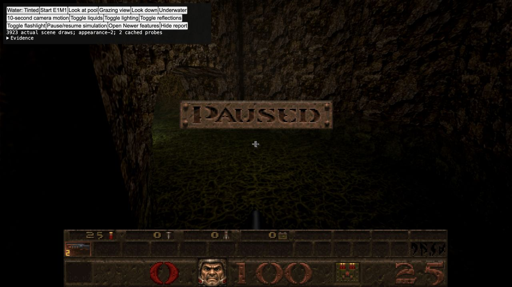
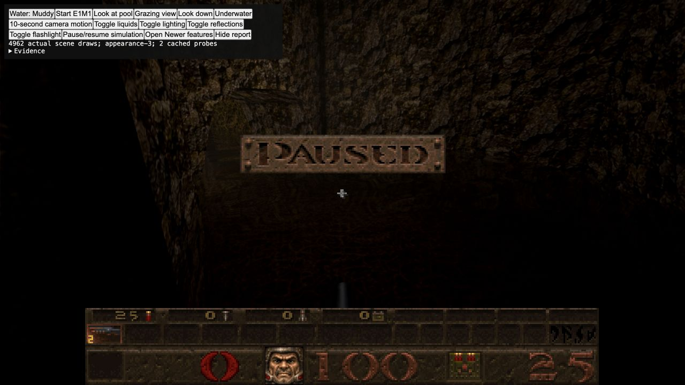
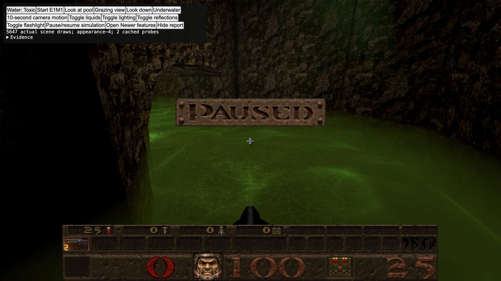

Clear · Tinted · Muddy · Toxic
Actual E1M1 renderer. Same paused camera and time; only water appearance changes.
Clear — floor detail, cool transmission
Tinted — translucent green
Muddy — brown sediment, obscured detail
Toxic — green glow, caustics and mist